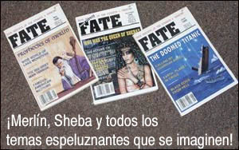

Siete mal de siete
Ocasionalmente hojeo nuestra gran colección de la revista Fate, una publicación pulp que era editada por Curtis y Margaret Fuller en Highland Park, Illinois. Fundada en 1948, Fate traía todas las historias sobrenaturales, ocultistas, paranormales y sobre OVNIs, profecías o viajes por el tiempo que podían encontrarse. Es interesante leer artículos que a primera vista eran excitantes, pero que luego perdían su encanto cuando se encontraban soluciones mundanas. Me encontré con un número que traía la historia de una misteriosa “desaparición”, que resumiré a sus puntos esenciales:
El 11 de diciembre de 1984, el industrial millonario Elmo Batterton, de 55 años, y su esposa Edna, de 59, simplemente desaparecieron, dejando encendidas las luces del árbol de Navidad en su casa del pequeño pueblo de Morton, Illinois, al sudeste de Peoria. La señora Batterton dejó su bolso sobre la mesa de la cocina. Cuando se conoció la noticia, el departamento de policía de Morton fue inundado con llamadas de psíquicos que predecían dónde serían hallados los Batterton.
El jefe Stephens informó que los psíquicos “salían de todos los rincones, mientras los medios llegaban en estampida”. Pero añadió: “Todos [los psíquicos] parecen personas sinceras”. Dijo, sin embargo, que nada de lo que proveyeron fue útil, aunque intentaron seguir todas las pistas. El sargento Thomas Daab dijo: “Eran muchos, y nos decían gran cantidad de cosas extrañas. También decían que no querían que se dieran a conocer sus nombres a menos que sus predicciones fueran correctas”. Ésa resultó ser una movida inteligente. Esta táctica, a la que también recurren los “psíquicos” cuando entran en los laboratorios para ser investigados científicamente, deja la impresión de que nunca fallan. Lean la variedad de destinos que siete psíquicos distintos adivinaron mágicamente para la pareja desaparecida:
Los Batterton habían sido secuestrados por cuatro hombres que los alimentaban con azúcar.
Habían sido asesinados y sus cadáveres estaban enterrados en un granero.
Estaban en un área boscosa cerca de Reading, Pennsylvania.
Serían encontrados por granjeros en la primavera junto a un camino de tierra entre Morton y St. Louis.
Estaban encerrados en una bodega en Michigan.
Habían sido asesinados por alguien implicado en drogas.
Habían sido secuestrados por una nave espacial extraterrestre.
Dijo el sargento Daab: “No sabíamos cómo verificar el último”.
Diez semanas después de la desaparición, el coche de los Batterton, con sus cadáveres dentro, fue encontrado en el río Illinois, donde aparentemente había caído a través del hielo aquella noche fría y neblinosa; no había ninguna evidencia de una jugada sucia. Todos los psíquicos habían estado equivocados, muy equivocados, pero si uno solo hubiera llegado con un solo dato que coincidiera con la realidad, se habría tomado como otra historia “confirmada” en los interminables relatos “probatorios” que se nos ofrecen. Además, el nombre del psíquico se habría dado a conocer a los medios, mientras los otros se mantenían en secreto. La verdad desnuda es que, si suficientes personas cuentan suficientes historias, por puro azar algunos puntos tienen que ser correctos de tanto en tanto. Esto es inevitable, y no debería tomarse como validación de los poderes psíquicos. ¿Cómo es el dicho? “Hasta un cerdo ciego encuentra una trufa de vez en cuando.” No hubo trufas esta vez…
Directo de Dios
El lector David Lichman nos dirige al sitio http://www.makers- diet.net/ que es administrado por un tal doctor Jordan Rubin, inventor de “The Maker’s Diet” (“La dieta del creador”). Es una dieta que consiste sólo en alimentos disponibles en tiempos bíblicos, ampliada con un suplemento —que, por supuesto, sólo él ha descubierto y sólo él vende— llamado HSOs —”Homeostatic Soil Organisms” (organismos homeostáticos del suelo)—. Dice que si comemos esta combinación, estaremos en sintonía con la voluntad de Dios. ¿Cómo podemos dudar de su palabra? ¡Tiene un doctorado de la “Academia de Terapias Naturales”! Ésta está estrechamente asociada a “Healing Light Ministries”, pero una diligente búsqueda en Internet indica que allí no hay programas de doctorado. Me parece que algo no está bien.
Esta dieta loca, según nos recuerda el señor Lichman, está basada en alimentos que se consumían en un período de la historia en que la expectativa de vida no era mayor al 60% de la actual. Como parte de su tratamiento, el “doctor” Rubin apremia a las personas a dieta a no hacer ejercicios aeróbicos, puesto que dañan la respuesta inmune del cuerpo. Caramba, eso es nuevo para mí. Pero está tocando algún punto vulnerable del proceso de razonamiento del público, puesto que su libro es el más vendido en Barnes & Noble.

Y David nos señala que en http://www.bottledwater.org/public/hydratio_main.htm encontraremos una “calculadora de hidratación” que nos dice cuánta agua debe consumir por día una persona para mantener su salud en estado óptimo. “Yo peso 253 libras (106,6 kg) y hago 20 minutos de ejercicio por día —escribe—, por lo tanto, debo tomar 17 vasos de agua diarios, más de uno por hora de vigilia.”
También señala que el sitio sobre “hidratación” es patrocinado por la Asociación Internacional de Agua Embotellada. ¿Mera coincidencia?
La ciencia arruina la predicción de Sylvia
El lector Jon Blumenfeld, quien es “estratega de tasas de interés”, nos cuenta que los índices de desempleo son parte importante de su trabajo. Dice que espera que algún día el desempleo sea parte importante del trabajo de Sylvia Brown:
¡Al fin! ¡Una afirmación que se relaciona con mi área de experiencia!
La predicción nº 5 de Sylvia, que en julio/04 el desempleo alcanzará un record histórico antes de disminuir por la llegada de una nueva tecnología en Texas y Nevada, es absolutamente descabellada. La probabilidad de que esto ocurra es casi nula, aunque más no sea que porque la primera parte es patentemente ridícula.
El índice anual más alto que se vio desde 1954, cuando comenzó la actual serie de desempleo, fue de 9,7% en 1982 (puede haber sido más alto a lo largo del año). Según las últimas cifras de desempleo (para marzo de 2004), el índice en EE.UU. era de 5,7%. Para alcanzar el 9,7% en julio, alrededor de seis millones de trabajadores deberían perder su empleo a partir de este momento y hasta entonces, sin que se crearan nuevos puestos de trabajo. Por supuesto, esto no es imposible, pero sería totalmente inaudito. Y lo de la llegada de “una nueva tecnología en Texas y Nevada” es bastante vago, pero es eso es exactamente lo que se espera. ¿Tal vez algo que combine juegos de azar, pozos petroleros y cría de ganado? Las posibilidades son aturdidoras.

De acuerdo, Jon, aceptaré tu experiencia, pero recuerda que Brown y los de su calaña dependen de los comodines; cuentan con que en medio de una larga serie de fracasos resonantes, una de las predicciones resulte correcta. Como hemos visto muchas veces, eso es lo que los medios buscan y sobre lo que se abalanzan para tener una “buena” historia. Pero ya lo veremos, ¿verdad? Estaremos en julio dentro de nueve semanas…
Entusiasta de la historia
El lector Michael Duchek, de California, escribe que un artículo aparecido aquí hace poco le recordó
… situaciones en las que he estado muchas veces, y sé que ha oído un millón de estas historias, pero no pude resistirme a enviarle ésta. Hasta hace poco trabajé en horario nocturno en un hotel de Arcata, un pueblo cuya reputación por la marihuana y todas las creencias descoyuntadas que acompañan su uso está bien merecida.
Una noche, una dama me preguntó si había visto alguna película recientemente, y yo me disculpé diciendo que ninguna me había interesado, y estaba esperando la última de El señor de los anillos. Su respuesta fue:
“Sí, ésas son buenas. Pero es un período tan oscuro de nuestra historia…”
Quedé demasiado pasmado como para responder, lo cual probablemente fue lo mejor. Habría perdido un cliente, y tal vez también mi empleo.
Supongo que el uso de “descoyuntado” es un juego de palabras…
Días de aceite y rosas
Se ha informado que en Perth, Australia, una estatua de la Virgen María que había estado atrayendo multitudes desde 2002, cuando aparentemente comenzó a derramar lágrimas con perfume a rosas, ha comenzado a llorar de nuevo. Caramba. La propietaria dijo que compró la estatua en Bangkok hace diez años, y que el domingo de Ramos volvió a verter lágrimas aromáticas. Dijo estar “sorprendida” por esto. Ya ven, la “imagen tallada” ya había estado llorando, pero la mujer no tenía idea de por qué había vuelto a empezar. ¡En serio!
Sin embargo, cuando el arzobispo local ordenó un análisis químico de las “lágrimas”, se le dijo a la mujer que se llevara la figura a su casa. Las pruebas hallaron que María lloraba una mezcla de aceite vegetal y aceite de rosas. Prudentemente, el arzobispo declaró que no estaba probado que fuera un milagro. Seguramente, de fondo se oían llantos y lamentos y rechinar de dientes.
Pero no crean que esta exposición del fraude disminuyó un ápice el celo de quienes creen a ciegas. Miles de personas siguen empujándose mutuamente para ver la estatua. La dueña ha construido un santuario para albergar la figura de yeso, que ahora se exhibe en su casa cuatro días a la semana. Sin ninguna duda se aceptan contribuciones para comprar Mazola y aceite de rosas. No puede esperarse que María vaya por sí misma a comprarlos en el supermercado.

¿Y no es extraño que sea este producto hecho en Bangkok y comprado en la calle el que manifieste el milagro? La población de Tailanda, aproximadamente 51 millones de habitantes, es predominantemente budista, con minorías de persuación musulmana, hindú, cristiana y sij. La mayoría de los ídolos religiosos de Cristo, María, San Cristóbal y otros santos que se venden en nuestro emporio local de cosas sagradas se hacen en China y Tailanda, como lo atestigua este artículo “Made In China” que tenemos en la JREF para que llore aceite o sangre —según cada uno elija— frente a los entrevistadores de la TV. Una ganga de USD 32,99.
Me recuerda una vieja historia: Un evangelista estaba predicando con vehemencia, diciendo a las personas congregadas lo que los esperaba.
—La ira de Dios los devorará —gritaba—. Habrá llanto y lamentos y rechinar de dientes.
—Yo no tengo dientes —dijo una anciana.
—Se proveerán dientes— replicó confiado el evangelista.
¡Por supuesto!
Fantasma expulsado
El lector David Bryant, un colaborador frecuente, escribe que no se lo menciona aquí desde hace mucho tiempo, así que nos envía esta historia:
Escribo para contar una historia sobre una “lápida luminosa” de Emporia, Kansas, donde yo vivía. Me la recordó la dama que tenía luces anaranjadas en su cuarto [mencionada la semana pasada]. Había visto muchas veces este fenómeno junto a unos amigos, pero opté por no investigarlo hasta el día en que decidí averiguar qué era.
En un cementerio con muchos árboles, desde unos 100 metros de distancia podía verse algo con un resplandor verdoso, más alto que ancho, de tal vez un metro de alto y veinte centímetros de ancho, teniendo en cuenta en el cálculo la percepción de profundidad y la distancia a la que parecía estar. Por supuesto, la ambientación contribuía al misterio. En esa ocasión en particular había ido con varios amigos y declaré que entraría al cementerio a ver qué demonios era eso. Me recomendaron que no lo hiciera. Supongo que pensaron que el Coco podía sorprenderme o algo así, pero yo seguí adelante. No parecía posible que fuera una luz reflejada, porque había muchos árboles. Y de todas formas, no había luces verdes. No, no había ningún semáforo, en caso de que sólo mirásemos cuando estaba en verde. Hmmm…
Caminé lentamente, y admito que tenía un poco de miedo cuando trepé la cerca y entré al cementerio. Al acercarme, parecía increíblemente brillante. Había árboles por todas partes. ¿Qué era esa cosa? Finalmente lo vi de cerca, y era el costado de una lápida, y cuando acerqué mi cabeza para tratar de determinar de dónde venía la luz, vi una lámpara en el estacionamiento de una iglesia, a una gran distancia. Inserte aquí su propia referencia religiosa.
Y, por alguna razón, había un conducto despejado y libre de ramas que impidieran que la luz llegase a aquella lápida. Era casi como si alguien hubiese podado intencionalmente los árboles para producir ese efecto. Pero no era así; el conducto era muy irregular, pero grande, una casualidad muy extraña que permitía que la luz llegara hasta aquel punto, aunque al observar desde fuera del cementerio se pensara que era imposible. A qué se debía el resplandor verdoso, no lo sé. Estaba oscuro, tal vez la piedra tenía algún contenido verdoso. ¿Es posible que la luz recibiera alguna influencia verdosa de las hojas de los árboles? ¿Las hojas exudan clorofila al aire? Esa parte no la entiendo, pero estoy satisfecho de clasificarla como inexplicada, y no como alguna influencia de otro mundo, gracias. La lápida brillaba a causa de una simple luz reflejada, punto final.
Oh, y a la gente tampoco le agradó demasiado mi explicación racional. Como tantos, preferían creer que era algo espectral, un fantasma o algo así. Lo lamento, sólo era luz.
Así que yo resolví el místico enigma de la lápida luminosa. Tan sólo yo.
David, el ojo funciona de maneras misteriosas. Claro que la percepción sensorial es algo de gran interés e importancia para el mago profesional, y yo he prestado mucha atención a las varias formas en que nuestros sentidos funcionan no sólo para informarnos, sino también para engañarnos. Es posible que la coloración verde de esta “aparición” que describes pueda atribuirse a las condiciones de poca iluminación. Cuando el ojo recibe muy poca estimulación luminosa —es decir, hay pocos fotones que afecten los sensores de la retina—, nuestro sistema tiende a ver en monocromo. Es bien sabido que el extremo azul/verde del espectro es el que más afecta la retina, razón por la cual cuando vemos algo a la luz de la luna —una iluminación relativamente pobre—, la impresión predominante que tenemos es de azul. Cuando los directores de fotografía quieren producir el efecto de noche en una escena, colocan un filtro azul sobre el objetivo de la cámara para teñir la imagen de ese color, y nuestro cerebro acepta que fue filmada de noche. De hecho, he visto más de un “western” en que las escenas nocturnas estaban filmadas a plena luz del día, con la luz fuertemente filtrada de azul para producir esta ilusión.
No puedo darte una buena razón por la que tu aparición se viera verde en lugar de azul, pero tal vez la luz que se reflejaba provenía de una lámpara fluorescente; la mayoría de estas luces tienen un gran contenido de verde, un hecho que muchos fotógrafos descubren consternados cuando no han sido cuidadosos con su fuente de luz y sus características.
No mencionas si el costado de la lápida estaba pulido o no; si era así, probablemente eso habría aumentado la reflectividad del objeto. En cualquier caso, gracias por proveer este misterio, que “sólo tú” resolviste tan valientemente.
No fue un éxito brillante
El lector Gerry Carton, de Australia, informa sobre un artículo que salió publicado allá con el título “Ojos bien cerrados”. Escribe:
Hace poco, un amigo me alertó sobre su sitio Web. Descubrí que su comentario sobre la detección psíquica de crímenes reflejaba mi reacción a un artículo publicado en uno de los principales diarios de Melbourne. Más abajo está mi carta, que sorprendentemente fue publicada a fines de enero. La referencia a una “lonchera” se debe a que la psíquica identificó correctamente que habría sandwiches en ella. Le escribí al periódico:
En “Ojos bien cerrados” se dice que Debbie Malone quería usar sus facultades psíquicas para ayudar a resolver crímenes. El artículo describe en detalle sus experiencias en dos casos resumidos de la siguiente manera: “La información que Malone ofreció [al investigador] Crea no produjo un gran adelanto”, y “Una búsqueda extensiva… fue llevada a cabo… usando información provista por Malone, pero aún no se ha encontrado ningún cuerpo”.
Más tarde: Malone “insiste en que ha ofrecido información importante que ha sido útil en otras investigaciones”. Pero si esto fuera verdad, se pensaría que habría nombrado esas investigaciones como ejemplos de su arte, en lugar de los dos vergonzosos fracasos que se citan. Malone resume: “No es una ciencia exacta”. Tal vez habría sido más sincero que dijera “no es exactamente una ciencia”.
Si sólo esa gente muerta le hubiera dicho algo útil, en lugar de lo que había en su lonchera, habría hecho estremecer a esos escépticos.
No siento que vaya a haber ningún estremecimiento, Gerry… Pero esa adivinación de sandwiches en la lonchera me hace dudar. ¡Vaya! ¿Cómo lo supo? Para ver la abundancia de evidencia convincente ofrecida por la señora Malone —evidencia de su poca pericia fotográfica— vayan a http://spiritphotography.tripod.com/ Es increíble. Y para una referencia a otra ciencia “inexacta”, vean el siguiente artículo…
¿Qué es orgánico?
Siempre me ha desconcertado cuán fácilmente podemos usar mal la palabras y adoptar sus significados “nuevos” como si siempre hubieran estado ahí. Hay tres reinos en la nomenclatura clásica: animal, vegetal y mineral. Todo puede ser asignado a uno de los tres. Un lenguado o una pulga corresponden al primero, un tulipán o un nabo pertenecen al segundo, y una piedra o un remache están en el tercero. Pero la facción del disparate ha adoptado la palabra “orgánico” para aplicarla sólo a una planta cultivada sin usar nada más que agua y fe. Dicen que un tomate es “no orgánico” si no creció “por sí mismo”, desprotegido de los insectos hambrientos o el suelo pobre. Yo objeto ese uso del término, pero tengo que aceptarlo porque ahora se lo utiliza en ese sentido. Sin embargo, sigo diciendo que en mi cafetera no hay granos de café minerales o animales.
Sobre ese asunto, el lector Terrence Fullerton nos ofrece:
En primer lugar, permítame felicitarlo por el excelente trabajo que hace. Su libro Fraudes paranormales influyó mucho en el desarrollo de mi pensamiento. Tal vez debería culparlo a usted por los problemas que enfrento ocasionalmente. He sido expulsado de varias organizaciones y extraoficialmente proscrito de varias reuniones, simplemente porque no me quedo sentado en silencio dejando que los demás promuevan insensateces.
Uno de los mayores fraudes que se promueven hoy es la agricultura orgánica, aunque a poca gente parece importarle. He escrito un artículo [ver más abajo] que he hecho circular entre quienes promueven esta agricultura. Allí señalo que en ella no hay lógica ni ciencia, sólo decisiones sin sentido basadas en la emoción.
A la fecha, he recibido sólo una respuesta de alguien que tiene un doctorado en ciencias agrícolas, quien dijo que la “agricultura orgánica” no es en realidad una ciencia “dura”, sino una filosofía. No sabía que la ciencia tuviera una versión “dura” y otra “blanda”, la única que conozco es la que se basa en hechos. He llegado a la conclusión de que muchas personas temen confrontar sus verdaderos problemas, y por lo tanto inventan mundos artificiales donde los problemas se resuelven mágicamente con “filosofía”. Lo triste es que, después de un tiempo, pierden la capacidad de distinguir el mundo real del mundo imaginario que han creado.
Vayan a http://www.agroservicesinternational.com/Articles/Organic%20hoax.pdf para leer una copia del artículo al que Terrence se refieren en su e-mail.
Una epifanía bien aceptada

El lector Nick Jarvis tuvo esta agradable experiencia:
Trabajo en el Planetario Clark de Salt Lake City, Utah, y tengo mucha suerte de poder trabajar en un lugar que tiene la misión de educar a la gente sobre ciencia y astronomía. Regularmente entro en discusiones con los asistentes del planetario sobre varios temas científicos. Sin embargo, también estoy en una posición donde veo cómo la ignorancia de los principios científicos y astronómicos básicos, combinada con una necesidad irracional de experiencias sensacionales, puede hacer que la gente salte a conclusiones erróneas sobre algunas de las cosas que ven en el cielo nocturno. Quisiera relatarle un ejemplo de una persona que conocí que rápidamente saltó a una explicación paranormal de un evento perfectamente normal.
Un domingo a la noche, cuando ya habíamos cerrado y estábamos limpiando, sonó el teléfono. La recepcionista contestó, y luego de alrededor de un minuto solicitó a la persona que llamaba que esperara. Me miró y dijo: “Alguien llama por un OVNI. ¿Quieres hablar con ella?” Curioso, acepté y tomé el teléfono. Hablé con una señora mayor que decía ver “un objeto rojo parpadeante con un anillo de luz alrededor”. Fue rápida para proveer información sobre su altitud estimada y su velocidad, notando que ambas excedían las capacidades de cualquier nave aérea conocida. Intenté extraerle su posición aproximada en el cielo, y luego de una lección rápida sobre cómo estimar el ángulo de elevación (la altura de un puño a la distancia del brazo extendido equivale a unos diez grados) tuve una idea aproximada de en qué parte del cielo estaba viendo este objeto.
Este episodio ocurrió a finales de agosto, cuando el planeta Marte estaba en oposición con la Tierra. La descripción que dio la mujer de la posición del objeto coincidía con la de Marte, aproximadamente al sudeste y en la elevación correcta para esa hora de la noche, y su brillo inusual ciertamente lo haría parecer una vista extraordinaria. Ésta era una explicación probable, pero quedaba el asunto del anillo aparente alrededor del objeto, su velocidad estimada, o su parpadeo. Sólo para confirmar que Marte estaba en el lugar correcto, y para ver si podía observar los otros efectos interesantes que la mujer veía, salí a observar el cielo por mí mismo. Al mirar el planeta, fue obvio que había una delgada capa de nubes a través de la cual los dos lo veíamos. Esto no sólo creaba un apreciable halo a su alrededor (puede verse un efecto similar al mirar la luna a través de nubes ligeras), sino que el movimiento de las nubes con el viento hacía parecer que Marte se movía a gran velocidad por el cielo.
Para resolver el problema del parpadeo necesitaba más información. De regreso al teléfono con la mujer, le pregunté si había árboles u otros objetos elevados cerca de su casa, específicamente del lado sudeste. Me respondió que había un gran álamo hacia el sur. Le ofrecí la explicación que estaba viendo un Marte inusualmente brillante, al que las nubes le daban un halo y la apariencia de movimiento. También le sugerí que parecía parpadear porque lo estaba viendo a través de las hojas agitadas del álamo.
Luego de meditarlo un momento, concedió que era muy probable que lo que le había descrito fuera la naturaleza del objeto que veía. Lo que me interesó fue que su voz tenía un tono de desilusión luego de que se resolviera la naturaleza misteriosa de su experiencia. Cito esta anécdota como ejemplo de la predisposición de la gente a aceptar explicaciones paranormales del mundo que la rodea. Los eventos paranormales son emocionantes, interesantes y entretenidos. El resultado de la sociedad superestimulada en la que vivimos es que creamos la necesidad de tener más emoción en nuestras vidas, que los hechos viejos y aburridos y la razón no satisfacen. Lo paranormal, por el contrario, ofrece una falsa realidad de ilusiones y engaños, pero nunca aburrimiento.
Estoy seguro de que Nick está muy complacido de que esta explicación simple y lógica fuera tan bien aceptada por la persona que lo llamó, aun cuando ésta haya expresado cierta desilusión. Reconocer la naturaleza probable de lo que era un misterio es un paso positivo. Nos vendrían bien más muestras de este contacto con la realidad, y deberíamos alentarlo.
Un PhD muy silencioso
Harold “Hal” Puthoff es uno de esos científicos tambaleantes que —con su colega Russell Targ— nos dio la deliciosa experiencia de pasear a Uri Geller por los medios como un genuino wunderkind 1 , el “paradigma” que la parapsicología había buscado durante tanto tiempo. Esa ilusión duró varios años, hasta que llegaron verdaderos científicos a examinar las afirmaciones. Me enorgullezco de que mi primer libro, “La magia de Uri Geller”, en 1975, haya sido en buena medida responsable de atraer la atención de la ciencia real sobre estas afirmaciones fatuas.
Por supuesto, Targ y Puthoff reaccionaron enérgicamente a mi libro. Publicaron un largo intento de impugnación en el “International Journey of Psychoenergetic Systems” —hoy difunto— en el que, increíblemente, declaraban:
En Fraudes paranormales, [Randi] da unos 28 puntos de refutación, si mi memoria no me engaña. Tuve la oportunidad de confrontar a Randi con pruebas en la mano en una conferencia de la Asociación Parapsicológica, y en una interacción grabada admitió estar equivocado en todos los puntos. Incluso dijo que los corregiría para la siguiente edición en rústica publicada por el grupo CSICOP. No lo hizo.
En caso de que se piense que esto sólo se trata de nuestra opinión contra la suya, tomamos de la lista de puntos incorrectos sólo los que pueden ser verificados independientemente. Ejemplos: Dijo que en nuestro paper de Nature habíamos verificado la habilidad de Geller para doblar metales. Busquen el paper y verán que dijimos que no pudimos obtener evidencia de esto. Dijo que una película del experimento de Geller tomada en el SRI por el afamado fotógrafo Zev Pressman no había sido confeccionada por él, sino que la habíamos hecho nosotros y simplemente pusimos su nombre. Nosotros mostramos una declaración firmada por Pressman en la que dice que él hizo la película. Etc., etc.

Apenas sé por dónde empezar, en serio. En primer lugar, los puntos a los que Puthoff se refiere eran exactamente 24, no 28, un hecho que se podría haber verificado simplemente consultando el libro. Estoy seguro de que este investigador dispone de una copia, y hay muchas a un precio razonable aquí mismo, en la JREF, aunque ese artículo sale muy poco: casi nadie solicita un libro sobre un artista desacreditado. La memoria de Puthoff lo engaña bastante en este sentido, y en muchos otros, como veremos a continuación.
Sí, cierta vez me encaró en una reunión, y despotricó con respecto al libro. Si además grabó esa reunión, yo no lo sabía, y ciertamente no me informó que lo estaba haciendo, ni me pidió permiso. Sin embargo, me complace que haya hecho esa grabación, puesto que ahora sabemos que podemos usarla para contrastar mis dichos.
¡Ah, pero esperen! Puthoff dice también: “[Randi] admitió estar equivocado en todos los puntos”. Eso es mentira, doctor Puthoff, y es una mentira consciente, un engaño intencionado, una mendacidad. Yo nunca dije tal cosa, y hoy, como entonces, sostengo los 24 puntos que usted menciona, TODOS ellos. Pero Puthoff continúa: “[Randi] incluso dijo que los corregiría para la siguiente edición en rústica publicada por el grupo CSICOP. No lo hizo.” Otra mentira. Nunca dije nada por el estilo. Lo que sí dije fue que me ocuparía del asunto de los 24 puntos que él esgrimía con tanto orgullo en la siguiente versión en rústica de Prometheus. Ese libro salió en 1982, y las págias 217 a 227 tratan en detalle sobre el tema. La próxima semana publicaré aquí ese material, para que vean las mentiras en que Puthoff está implicado.
Siguiendo con los dos párrafos de Puthoff de más arriba, tan repletos de desinformación: “[Randi] dijo que una película del experimento Geller tomada por el afamado fotógrafo Zev Pressman no había sido confeccionada por él, sino que la habíamos hecho nosotros y simplemente pusimos su nombre”. En ninguna parte de lo que escribí aparece tal declaración, ni siquiera una inferencia en ese sentido. Siempre he creído que Pressman filmó la farsa, y nunca he hecho las declaraciones que cita Puthoff.
Pero ahora viene lo más importante de todo: Le he escrito al doctor Hal Puthoff, solicitándole una copia de esa grabación probatoria que dice haber hecho, atrapándome en el acto de admitir que estaba equivocado. Al día de hoy, no he recibido respuesta. ¿Por qué? Creo que mis lectores saben muy bien por qué Puthoff está tan silencioso y no responde esta simple petición.
Para subrayar lo que digo, transcribo aquí el texto de una carta que le envié al doctor Hal Puthoff el 19 de abril de 2004 al Instituto de Estudios Avanzados en Austin. Número certificado: 7003 0500 0002 3034 8232.
Dr. Puthoff:
Se me ha dicho varias veces que usted posee una grabación de audio que afirma haber hecho durante una conversación que mantuvimos hace años, tal vez en 1980, en una conferencia no especificada. Usted ha dicho que en esa ocasión hice declaraciones que no recuerdo haber hecho. Ahora se me solicita que responda por tales declaraciones.
Ya le he escrito con respecto a esto, solicitándole tuviera a bien proveerme una copia de esta grabación. Claro que estoy dispuesto, como ya le he dicho, a cubrir cualquier costo de preparar tal copia y enviarla a la dirección que figura en el membrete de esta carta.
También estoy dispuesto a declarar que no tengo intención de iniciar acciones legales contra usted por haber hecho una grabación sin mi conocimiento ni mi permiso. Con gusto le enviaré un documento notariado a tal efecto, si usted lo solicita.
Esta carta será publicada en mi página web (www.randi.org) como parte del informe semanal que aparecerá durante una semana a partir del viernes 23 de abril de 2004, luego de que usted la haya recibido, de modo que podrá asegurarse de que es auténtica.
Espero su respuesta.
(En el momento en que esta página era publicada, recibí una respuesta del Dr. Puthoff. Aparecerá aquí, íntegra, la próxima semana.)
El desafío de la JREF
La larga postulación de Natalya Lulova se ha cerrado oficialmente. Se abrió el 6 de noviembre de 2001. Han pasado un año y dos meses desde que volvió a postularse, y su nueva abogada nos ha hecho pasar por una serie de acrobacias que han establecido la realidad de mi opinión experimentada en estos asuntos: la jovencita ya no quiere más pruebas ni discusión sobre éstas, aunque su madre parece querer que continúe. La niña creó el monstruo y lo alimentó; éste creció de un modo que no había anticipado, y ahora no puede matarlo. Sí, seguirá siendo una pequeña celebridad en su comunidad de Brooklyn, pero su historia pronto perderá lustre, y los creyentes se dispersarán.
Otros que hacían el mismo truco con los ojos vendados: Margaret Foos, Mai Takahashi y los niños cuyos padres pagaron generosamente para que se les enseñara la “visión sin ojos” en el Instituto Más Vida de México D.F., todos se echaron atrás cuando llegó la hora de ser examinados; ahora Natalya se ha unido a sus filas. Aunque hace dos meses notifiqué a su abogada del cierre del expediente de postulación, no recibí respuesta; ella me había estado escribiendo en un tono estridente, exigiendo reacciones a sus demandas absurdas y caprichosas, pero ahora no recibimos nada. El caso está cerrado, luego de dos series de pruebas fallidas, 899 días (dos años y medio) y muchas idas y vueltas entre la JREF y los dos abogados de Lulova.
Esto me lleva a una discusión que ha estado activa en el Foro de la JREF, a saber, la pregunta de por qué no corro a informar sobre todas y cada una de las postulaciones por el premio de un millón de dólares. He intentado explicar pacientemente que sencillamente no tenemos tiempo ni personal para dedicarnos a esa vanidad, pero quejarse parece ser un gran pasatiempo entre muchos de los que aparecen por el Foro. Lo que pretendo hacer en este respecto es que nuestros pasantes vean los expedientes de los aspirantes y hagan un desglose de las diferentes clases de afirmaciones que recibimos, y un resumen de cómo se las administró. Es imposible cubrir muchas de ellas con gran detalle, aunque habrán notado que en meses recientes me he referido aquí detalladamente a algunas de ellas.
Nuestro voluntario Kramer está preparando un plan por el cual construiremos una bitácora del desafío, y una nueva área del Foro de la JREF en la que los miembros podrán discutir las afirmaciones y el progreso de las investigaciones, las pruebas preliminares y todo lo demás. Habrá actualizaciones diarias y mantendremos todo tan al día como sea posible, recordando que las actualizaciones consistirán mayoritariamente de nuevas postulaciones, y muy pocas notas sobre los exámenes, puesto que muy pocos aspirantes llegan a la etapa preliminar.
Esos pobres escépticos
Años atrás, en 1985, el Comité para la Investigación Científica de las Afirmaciones de lo Paranormal (CSICOP) organizó una conferencia en Londres, Reino Unido. En un artículo que se publicó en un periódico de la miríada que se dedica en ese país a los asuntos disparatados, un tal Pastor Jack Brock expresó con asombro que los oradores “recitaban sus homilías en una vena humorística y con un asomo de desprecio o condescendencia”. Siguiendo en ese estilo, concluía su artículo con una desesperante conmiseración por la gente del CSICOP:
Es posible que todos ellos tengan razón. Pero cuán empobrecidos han de ser como individuos para ir por la vida sin la calidez mental interna de la fe; no la fe religiosa, sino simplemente la predisposición a considerar que puede haber en la vida algo más emocionante o etéreo que las tristes limitaciones de la condición humana que reconocemos como nuestro destino a mediados de nuestro viaje hacia el eventual olvido.
Raramente encuentro un mejor ejemplo de lo mal que los creyentes entienden la visión que los escépticos tienen de la realidad, y aunque quisiera pensar que esto se debe solamente a la ignorancia, debo opinar que si nos ven de este modo gris es para regocijarse con mayor facilidad en su negación, planeada y defensiva, a aceptar las cosas como son.
En una vena similar, un lector que ha emprendido largas discusiones con Jacob Spinney —a quien muchos de ustedes conocieron en The Amaz!ng Meeting 2— me envió una muestra de su retórica —¡poco menos de dos mil palabras!— tomada de sus encuentros con Jacob, en la que pregunta por qué alguien elegiría llevar una vida moral si no estuviera presente el temor al Infierno. Yo había escrito aquí, en nuestra página Web:
Con frecuencia me preguntan: “Si alguien no le teme al Infierno, ¿por qué habría de llevar una vida moral?”. Ésta es casi la pregunta más insultante, condescendiente y humillante que se puede formular. Da a entender que sin temor a un castigo atroz, cualquiera robaría, asesinaría, mentiría o haría cualquier cosa en su propio provecho.
El escritor emprendió una larga perorata sobre que no se trata de temor al Infierno, sino que:
El “temor de Dios”, (lo cual literalmente significa reconocimiento de quién es él y acatamiento a su autoridad y señorío) es la causa por la que los cristianos aceptamos a Cristo y a la Cristiandad.
¿En serio? Bien, es temor de todas maneras, no importa de dónde se derive. ¿Y no es acaso el Infierno a donde van los que no “acatan” —rezan, obedecen, temen, aplacan, veneran y reconocen abiertamente esta cosa insegura y omnipotente—? Según me dicen, el paquete incluye: azufre ardiente, torturas, ahogamiento, dolor, tormento, verdaderas noches de insomnio y una variedad de otras cosas desagradables.
Yo respondí:
No creo que Spinney tenga ningún problema con esto, ni yo tampoco.
Ya me he referido a esto alguna vez, aunque no recuerdo dónde. Hace unos años, mientras caminaba por una playa en Australia, quedé detrás de las otras dos personas que caminaban conmigo porque distinguí algunos trozos de vidrio en la arena. Comencé a recogerlos y a colocarlos en una bolsa de plástico que también encontré, pensando simplemente que era lo correcto. No tuve imágenes de mí mismo recibiendo una medalla, o una aureola en el cielo, ni siendo siquiera felicitado por mis acompañantes. De hecho, pensaron que estaba recogiendo caracoles.
He hecho cosas así de tanto de tanto, simplemente porque me parece lo correcto. En el ejemplo citado, debo admitir que sí tuve imágenes de niños corriendo por la playa y lastimándose; a eso lo siguió la satisfacción de saber que acaso había impedido tal accidente. ¡ESTO NO ES ALGO QUE ME SEA DIFÍCIL HACER! No tuve que pensarlo dos veces, no temí ningún castigo, no preví ninguna recompensa ni agradecimiento. De hecho, esperaba que mis acompañantes no advirtieran lo que estaba haciendo, para no tener que dar una larga explicación como estoy haciendo ahora.
Yo no robo, ni violo, ni mato, pero no porque me lo prohíban unas reglas escritas en un libro; es porque se me ocurre que el legítimo dueño de esa propiedad sería dañado por mi acción, y/o no quisiera que usaran esa fuerza o coerción en mi contra. No seguiré con esto, porque tengo otras cosas que hacer.
Y soy un ateo confirmado.
En cualquier caso, Jacob Spinney se ocupó con mucha eficiencia de este asunto, descubriendo en el camino que su oponente declinó responder las pertinentes preguntas que Jacob le lanzó. Era de esperarse…
En junio, Jacob se unirá a la JREF en Florida como pasante junto con Jonathan Pritchard. Será la segunta vez que Jonathan preste tal servicio. Tenemos montones de trabajo pendiente, muchachos…
Recordando a Geller
En el Tampa Tribune, el columnista Daniel Ruth comentó sobre un reciente discurso televisivo de Bush:
¿Quién habría dicho que George W. Bush es tan infalible que hace que el Papa Juan Pablo II parezca Uri Geller?
En conclusión
Por el momento no haré comentarios sobre un reciente ataque particularmente vil e injuriante que ha aparecido en el Foro de la JREF; ya se han tomado acciones legales que serán presentadas según progresen. Ese sonido de huida que oyen es una persona despreciable tratando de meterse bajo la atestada piedra de Sylvia…

Notas
- 1
-
Niño maravilla. En alemán en el original. (N. del T.)
Comentarios
Comments powered by Disqus